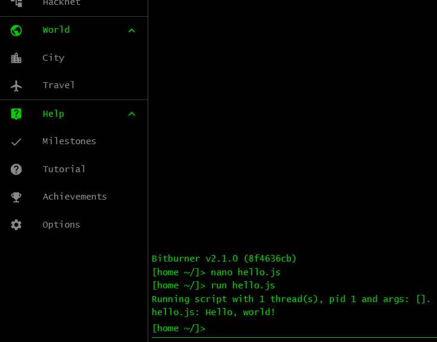

Your first program
When learning a programming language, the traditional first program you write is
called the Hello, world program. At the terminal, type nano hello.js as
shown in the left panel of the image below and press Enter. The
command nano launches an editor in which you can write your JavaScript code.
The argument hello.js given to nano tells the command to open the code
editor and create a template file named hello.js. The command uses the file
extension .js to figure out that you want to create a JavaScript program. The
code editor is shown in the right panel of the image below. If you have not done
so, explore other tabs and familiarize yourself with the game's interface. When
you are ready to code, click on the tab Script Editor (or press the
key combination Alt + e) to return to the code editor.

Copy and paste the following program into the code editor:
/** @param {NS} ns */
export async function main(ns) {
ns.tprint("Hello, world!");
}
Click on the button Save (or press the key combination
Ctrl + s) to save the content of the script. Click on the
Terminal tab (or press the key combination Alt +
t) to return to the terminal. At the terminal, type the command
run hello.js and press Enter to run your first JavaScript program.
The result is shown in the following image. You should see the text
Hello, world! printed to the terminal.

Exercises
Exercise 1. The terminal is the area of Bitburner that allows you to enter commands and run scripts. Read more about the terminal here.
Exercise 2. The terminal accepts a number of commands. You have been using the command
run. Here are more details about the command. Do not worry if you find the information incomprehensible.Exercise 3. The terminal command
helpallows you to find out more information about a command. You might not always remember how to use the commandrun. Execute the commandhelp runat the terminal to refresh your memory.Exercise 4. Browse through the list of commands to find out what the game allows you to do at the terminal.
Exercise 5. Might I interest you in a feline companion? Why not
buy catfrom the comfort of your terminal?Exercise 6. What is that meowing you hear in the distance? Oh no, it is a tabby stuck in a cat flap. Feel free to
help catwhenever you are ready.